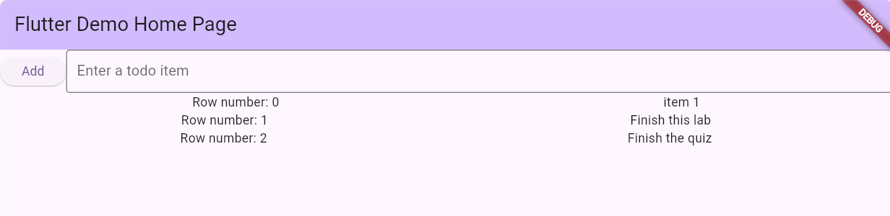

Create a new branch in your lab project for Week6. It can be a branch splitting off from main or any other week because you will be creating a whole new page from what was done previously.
For this week's lab, you will demonstrate to your lab professor your knowledge of ListViews:
Create a "To Do" list application that lets users add items to a list. The user can type into a TextField and click "Add" which should then make the item in the List.

Each item should have the row number on the left side, and the To do item to the right.
You should add a Long-Press gesture detector which will bring up a dialog box asking if the user wants to delete the item. If the user selects "Yes", then the item will be removed from the list. If the user selects "No", then nothing should change.
If the number of items is empty, then you should instead show a Text saying "There are no items in the list".